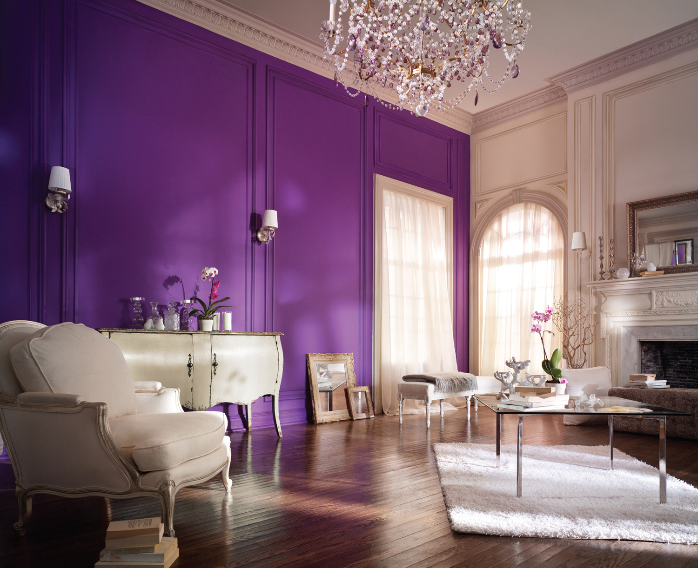

Violet Gallery
Below is a series of images that truly represents the color violet and what I believe is a pretty color that sometimes goes underappreciated and hopefully looking at these imaegs allows you to feel a sense of calmness or rather be intruiged by the images below


